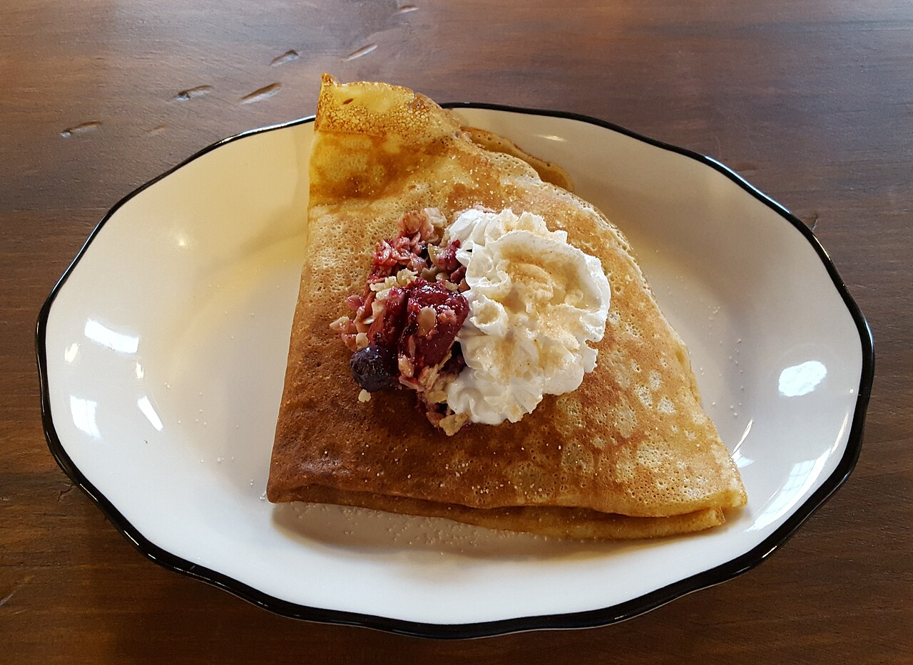

Simple Crepes

Crepes are simple to make
Making homemade crêpes is easier than you think. You'll find a detailed ingredient list and step-by-step instructions in the recipe below.
Ingredients
Here are the ingredients you'll need.
- 2 large eggs
- 1/2 cup milk, or more as needed
- 1/2 cup water
- 1/4 teaspoon salt or to taste
- 1 cup all-purpose flour
- 2 tablespoons butter, melted
Steps
- Whisk eggs, milk, water, and salt together in a large mixing bowl. Add flour and melted butter; whisk vigorously until batter is smooth and pourable.
- Heat a lightly oiled griddle or frying pan over medium-high heat. Pour or scoop the batter onto the pan, using approximately 1/4 cup for each crêpe. Tilt the pan with a circular motion so that the batter coats the surface evenly.
- Cook until the top of the crêpe is no longer wet and the bottom has turned light brown, 1 to 2 minutes. Run a spatula around the edge of the skillet to loosen the crêpe; flip and cook until the other side has turned light brown, about 1 minute more.
- Serve hot. Enjoy!
Nutrition Facts
128 kcal, 7g fat, 2g saturates, 12g carbs, 12g sugars, 0.8g fibre, 4g protein, 0.2g salt
Home